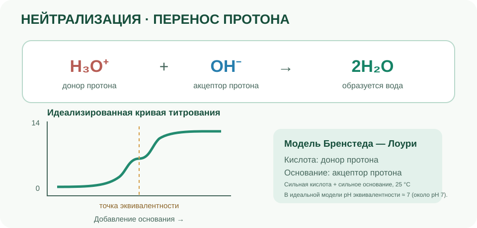

Кислотно-основные свойства связаны с переносом протонов и равновесиями в водных растворах. Шкала pH помогает описывать кислотность среды.
Исследуйте шкалу pH
Передвиньте ползунок. Для разбавленных водных растворов при 25 °C нейтральная среда имеет pH около 7.
pH = 7,0 · нейтральная среда
0 · Кислая7 · Нейтральная14 · Щелочная
pH = −log₁₀ a(H₃O⁺)
pH — логарифмическая величина: изменение на одну единицу соответствует десятикратному изменению активности ионов гидроксония. Шкала в этой модели использует ориентир нейтральности при 25 °C; при другой температуре нейтральное значение pH может отличаться. Значения pH не ограничены строго интервалом 0–14: в достаточно концентрированных растворах они могут выходить за его пределы. Ползунок показывает только учебный диапазон 0–14; его классификация использует ориентир pH 7 для разбавленных водных растворов при 25 °C.
Нейтрализация

ПЕРЕНОС ПРОТОНА И ТИТРОВАНИЕ
H₃O⁺донор протона
+
OH⁻акцептор протона
→
2H₂Oобразуется вода
Идеализированная кривая титрования
pHДобавление основания →
Модель Бренстеда — Лоури
Кислота: донор протона
Основание: акцептор протона
Сильная кислота + сильное основание, 25 °C
В идеальной модели pH в точке эквивалентности около 7.
Нейтрализация: перенос протона и кривая титрования сильной кислоты сильным основанием.
В реакции гидроксония с гидроксид-ионом образуются молекулы воды:
H₃O⁺ + OH⁻ → 2H₂O
01
Кислоты
В модели Бренстеда — Лоури кислота отдаёт протон.
02
Основания
Основание принимает протон.
03
Индикаторы
Меняют окраску в зависимости от кислотности среды.
Сильная кислота практически полностью передаёт протоны воде, а слабая устанавливает равновесие неполной диссоциации. Сила кислоты не то же самое, что концентрация: разбавленный раствор сильной кислоты может быть менее концентрированным, чем раствор слабой кислоты.
Кислота после отдачи протона превращается в сопряжённое основание; основание после присоединения протона — в сопряжённую кислоту. В паре частицы отличаются на один протон.
HA + H₂O ⇌ H₃O⁺ + A⁻
Kₐ = a(H₃O⁺) · a(A⁻) / a(HA)
Константа кислотности Kₐ характеризует равновесие передачи протона; для разбавленных растворов активности часто приближённо заменяют концентрациями с учётом стандартного состояния.
Буферные растворы
Буферный раствор содержит слабую кислоту и её сопряжённое основание (или слабое основание и сопряжённую кислоту). Он уменьшает изменение pH при добавлении небольших количеств кислоты или основания.
pH ≈ pKₐ + log₁₀([A⁻]/[HA])
Уравнение Хендерсона — Хассельбаха — приближение для разбавленных растворов, когда активности можно заменить концентрациями. Оно применимо, когда обе формы сопряжённой пары присутствуют в заметных количествах.
Буфер не удерживает pH неизменным при любых условиях: его способность противостоять изменению pH конечна и зависит от общей концентрации компонентов и их соотношения. При слишком большой добавке кислоты или основания буферная ёмкость исчерпывается.